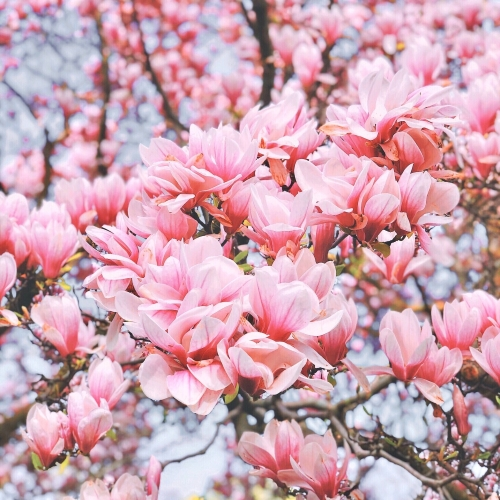

Module 10 Assignment: Changing Element Styles
Click the image to change the image
Double click the image to change the image back to the original

Run your mouse over the image to change.
Right-click and select View Source for more details.